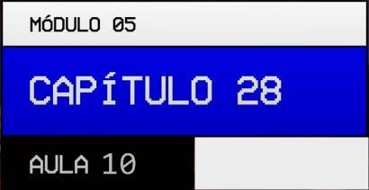

Créditos:
Propriedades de itens para Grids (parte 1)
--:--Esta aula diz respeito a um assunto novo; Que é sobre "propriedades de items", pois até o vídeo 09 desse Capítulo 28, foi abordado assuntos sobre "propriedades de container".